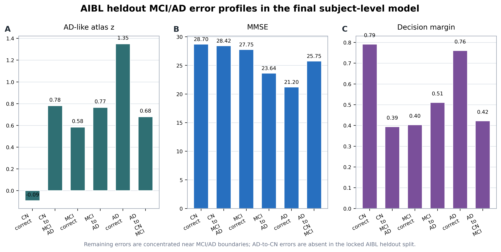
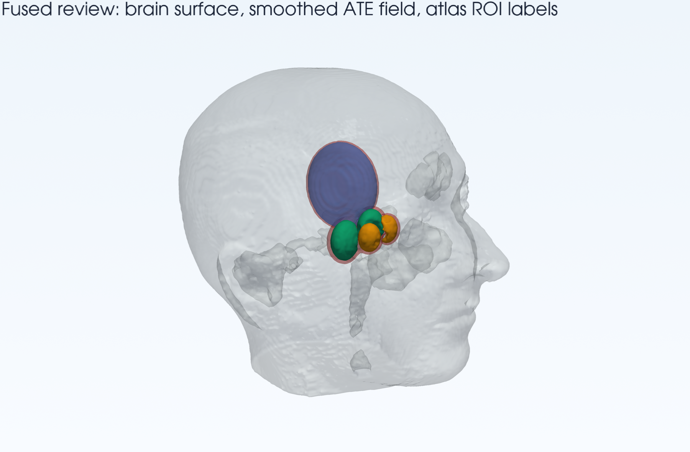
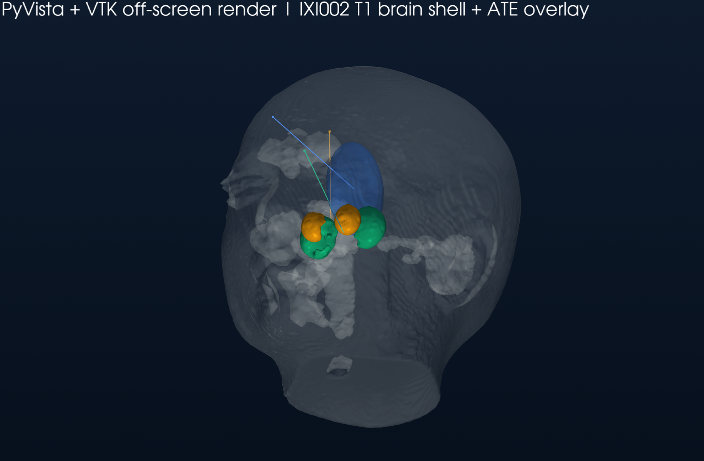
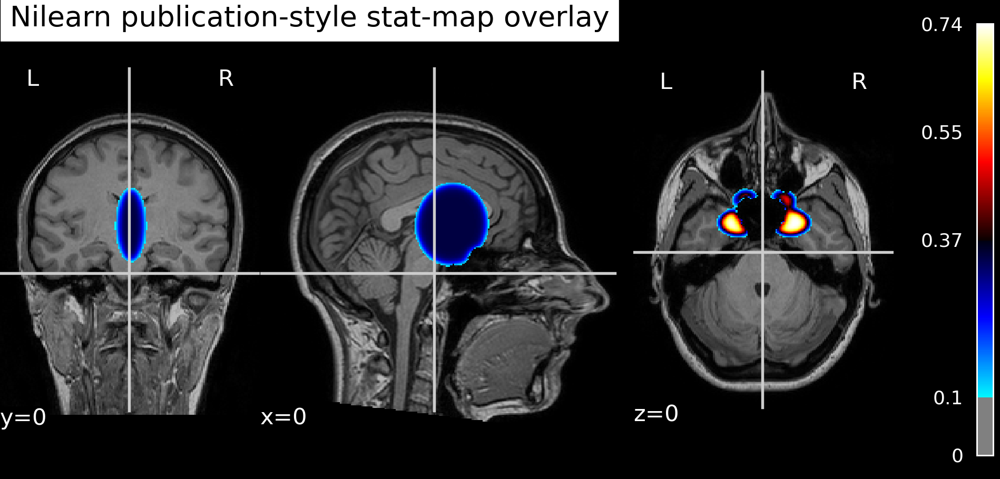
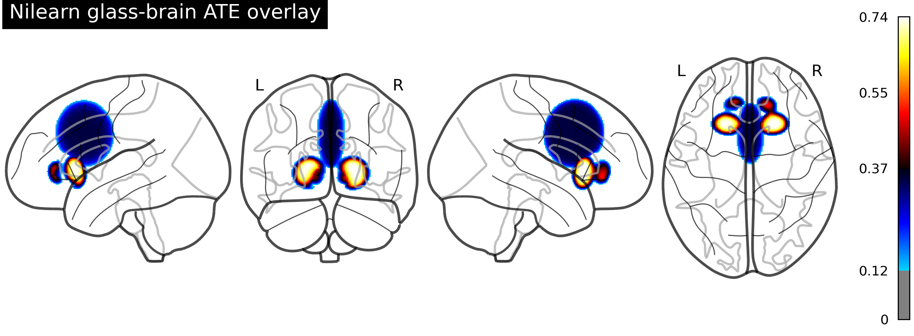
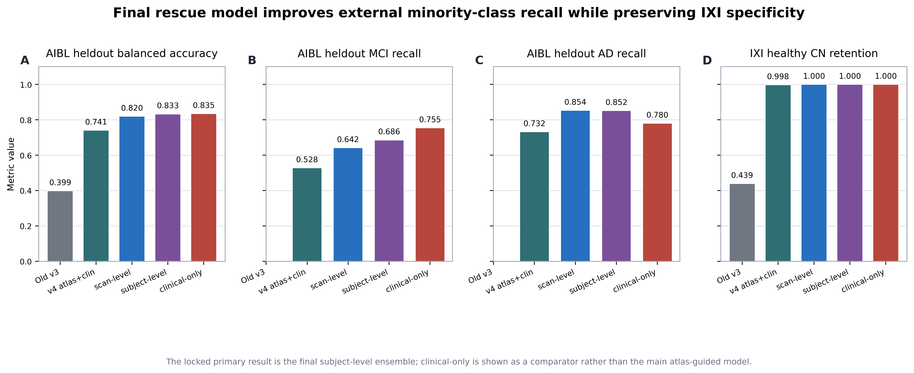

ARA-Net
V6 upload analysis workbench
Upload
Patient-level analysis
File
Probability
Subject
Review
Result
IXI002-Guys-0828-T1
External healthy-control case is loaded as the default preview.
| Subject | Pred | CN | MCI | AD |
|---|
Case-Level Evidence
AIBL_14

Real Imaging Render
IXI002 server case and VTK/Nilearn evidence




V6 Figure Package
Connected manuscript figures

Subject-Level Aggregation
AIBL heldout confusion structure
Error Anatomy
AD-like z by error group
AD-correct cases show the strongest AD-like atlas signature; residual errors are concentrated around MCI/AD staging boundaries.
Case Audit
Representative boundary cases
| Subject | True | Pred | CN | MCI | AD | AD-like z |
|---|---|---|---|---|---|---|
| Loading representative case table. | ||||||
Pass
Clinical presentation evidence
AIBL heldout subject-level performance, IXI negative-control specificity, runtime metrics, and atlas AD-key concentration are all displayed as reviewable evidence.
Needs Validation
Brain-region annotation
Current support is atlas-level structural consistency. It is not clinician-drawn lesion overlap, CAGM-style annotation validation, or a cleared diagnostic claim.
Limitation
OASIS domain shift
OASIS remains a documented stress-test failure with prediction collapse toward CN. The interface presents this as a limitation, not as external success.